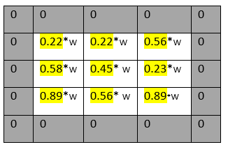
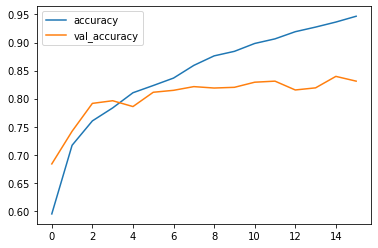
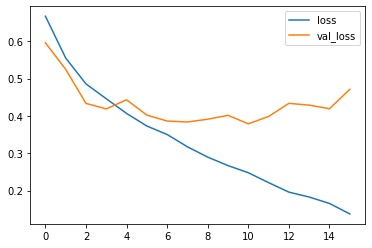

Filters and kernels Kernels and filters are just like applying some filter on image and that is done by convolution later so the small (3 x 3 ) matrix applies on the input image which is called kernel some time filters it is just interchangeable. I am going to say the filters. So, every filter has their own weight and that weight will be multiplied by the input image.

We can alter the size of the filter like (3 x 3 ) or (4 x 4 ) and as we want. The process of adding filters and multiplied input vectors with filter’s weight is called convolution and the layer of this is called convolution layer. We can add multiple convolution layers. However, adding multiple layers can significantly take more use of CPU and GPU.
We can reduce the size of the filters by sub-sampling, it is done by the getting or selecting higher valur (max value) amoung the subset and making new set of matrix which is called max polling so the (4 x 4 ) would have the 14 values that will be the (2 x 2) matrix which will have the only 4 values. Polling layer end up with removing so much information even (2,2) kernel size reduces 75% of the information.
Polling layer – down sampling / sub-sampling method We can reduce the size of the filters by sub-sampling, it is done by the getting or selecting higher value (max value) among the subset and making new set of matrixes which is called max polling so the (4 x 4) would have the 14 values that will be the (2 x 2) matrix which will have the only 4 values. Polling layer end up with removing so much information even (2,2) kernel size reduces 75% of the information.
Overfit and Underfit Overfit – when model fits too much to the noise from the data. That result the low error on training set and high error on Test/Validation set. If it fits on every single points then error going to be down on that (Training) set so model perform good fit on that (Training) set but return worst fit on testing set and validation set. That means models hits every single point and giving low error on that training set. So, it may mislead you that, this is best fit model because it has low error. So your are going to have a large error on test data set. Underfit – when model has too much bias. Means it cannot understand the trend and perform worst on training dataset and testing data set. Means high bias and low variance.
Above diagram is the example of the overfitting model and that was my first CNN model without any L1 or L2 regularization. Where model has good fit on training data but when it got new unseen (testing set) data it could not able to classify the happy and good categories. Which is clearly indicating that our model is overfitted. That is also determined by loss matrices.
Here loss is also getting higher as our model saw new data. So that loss going to be higher after more epochs and can be only minimize by regularization techniques.
In order to reduce overfitting, there are methods available which called Regularization which just add penalty. So, in regression there are coefficients along which every feature vector when regression model overfits that time model fit with every point means every coefficient of each vector will be calculated for even though they are less affective to the y label (less coefficient’s features) and the slop of fit line will end up steep and not perfect resultant the new unseen data points will get high error from the fit line. That happened in regression.
In Convolution Neural network we apply the filters so every filter has their own weight as a previously mentioned so filters weight is the coefficient in the case of regression. and suppose we are using every filter weight in order to classify definitely we are going to have overfitted model.
What actually dose the Regularization techniques?
Previously I explained how useless coefficient screw the model for fitting a perfect regression line over data points. L2 regularization punishes function by the lambda term multiplied by coefficients

In above equation there is cost function (true label – predicted label) which is the error of your model and at the end there is one term added which is lambda multiplied by their coefficient’s square which means adding some term with square of coefficients will make slop downward which will be the best fit line because we knew that variance was high on previously model’s fit line so making that slop downward result would be the fitting line so the lambda term with square coefficients do that work for us in L2 Regularization in Regression.
That was the L2 regularization respect to the regression but how that works in convolution neural network. In CNN weight of every filter will be subtracted by the lambda divided by 2 so here we are making our filter weights litter bit smaller Which was high previously and ended up with overfitting making weight smaller will solve the problem of overfitting.

In above diagram we can see the accuracy of testing data (unseen data) is also getting higher as our training data. Which means our model variance would be the low resultant the error would be also low. Let’s check out the error graph of actual and predicted values.

Here we can easily understand how regularization made model fit well and improved model accuracy and depleted error. This was only the intuition and the explanation of my understatement over L2 regularization the proper code implementation you can find on below link.
Model training codding Juypter Notebook